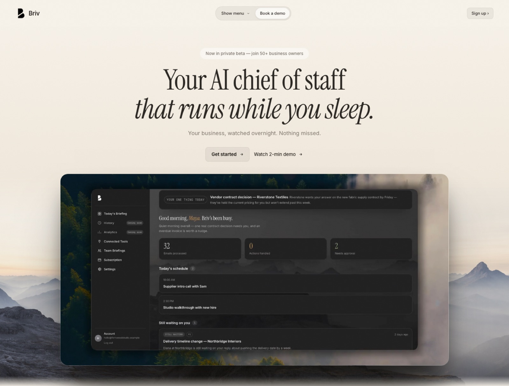
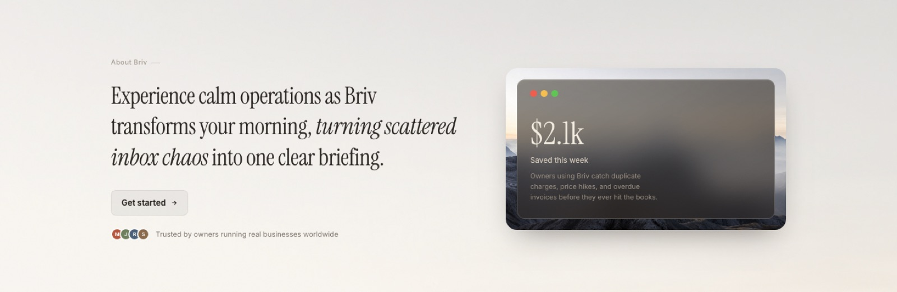
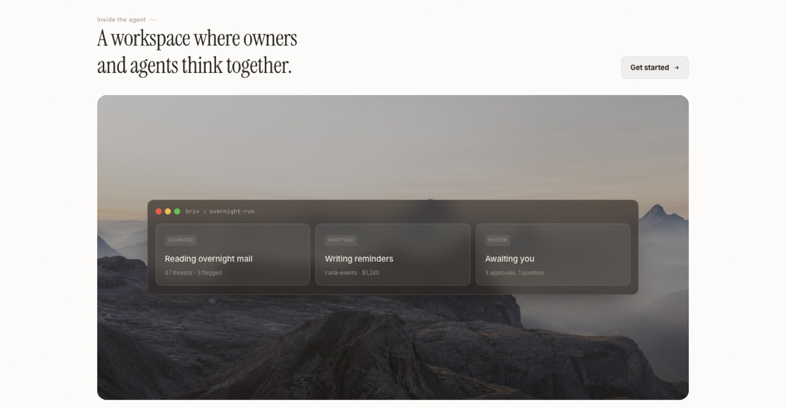
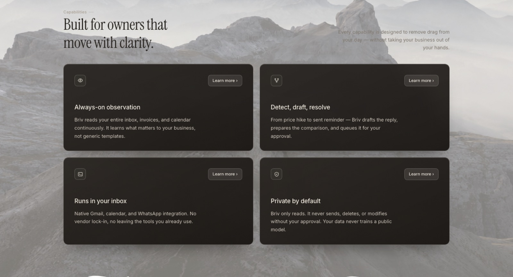

← Portfolio ( Case study — 01 )
An AI chief of staff, given a calm voice.

The brief
Briv reads a business’s email overnight and sends one clear morning briefing — urgent items, money alerts and the actions it has already taken.
The team needed a website that made an AI product feel trustworthy rather than technical: something for owners who are tired, busy and sceptical of AI hype.


Approach
(03)- 01
Calm over clever
A warm paper palette, editorial serif headlines and soft mountain imagery make the product feel like a morning ritual, not another dashboard.
- 02
Show, don’t tell
Real interface moments — the briefing, today’s schedule, ‘still waiting on you’ — sit in frosted-glass panels so owners see exactly what they get.
- 03
One clear action
Every section leads back to ‘Get started’. Secondary paths stay quiet, so the page never asks for two things at once.

Outcome
The new site launched alongside Briv’s private beta and became the single place every pitch, post and investor deck points to.
“Onform understood what we were building before we could explain it ourselves. The site feels exactly like the product — calm, clear and quietly confident.”
Briv